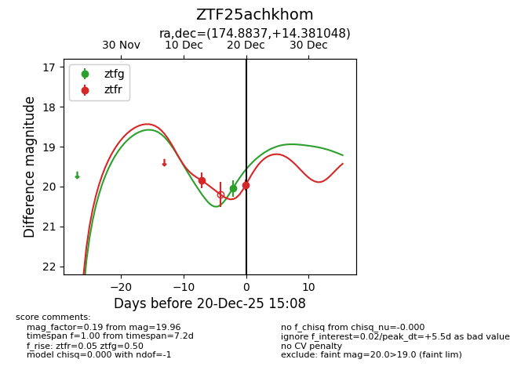
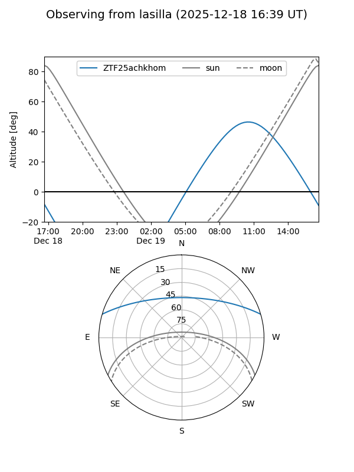
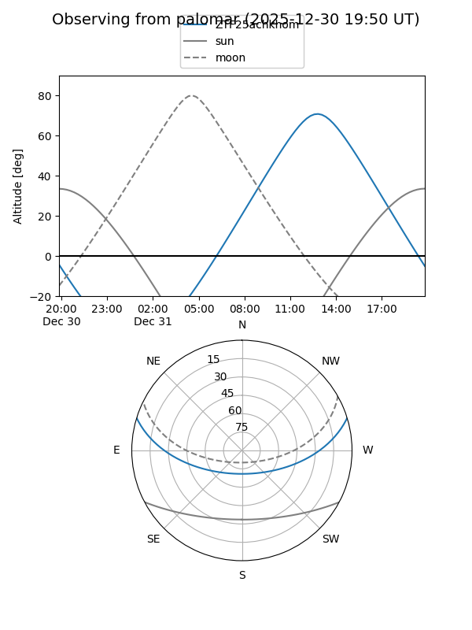

ZTF25achkhom
Target ZTF25achkhom at 2025-12-31 16:59
Aliases and brokers:
FINK:
Lasair:
ALeRCE:
alt names
ZTF25achkhom (ztf,fink_ztf)
Coordinates:
equatorial (ra, dec) = 174.8837,+14.38105
equatorial (HMS+DMS) = 11:39:32.09,+14:22:51.77
galactic (l, b) = (246.5945,+68.95066)
Flags:
Photometry:
last ztfg=20.05, ztfr=19.96
1 ztfg, 2 ztfr detections
Lightcurve

Visibility


Additional plots